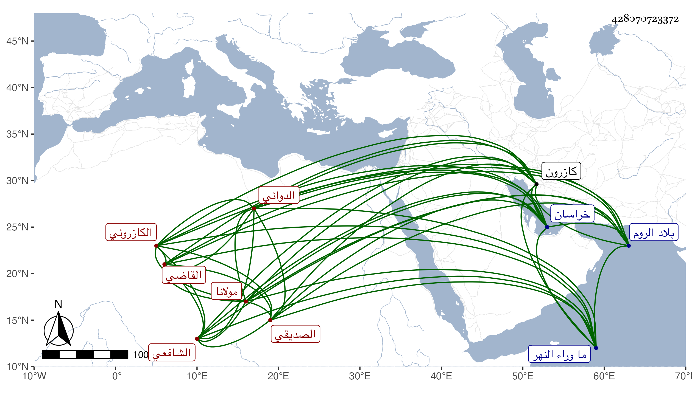

0902Sakhawi.DawLamic.ITO20230111-ara1.EIS1600.428070723372
Biography ID: 428070723372
319
محمد بن أسعد مولانا جلال الدين الصديقي الدواني بفتح المهملة وتخفيف النون نسبة لقرية من كازرون الكازروني الشافعي القاضي باقليم فارس والمذكور بالعلم الكثير ممن أخذ عن المحيوي اللاري وحسن بن البقال ، وتقدم في العلوم سيما العقليات وأخذ عنه أهل تلك النواحي وارتحلوا إليه من الروم وخراسان وما وراء النهر . وسمعت الثناء عليه من جماعة ممن أخذ عني واستقر به السلطان يعقوب في القضاء ، وصنف الكثير من ذلك شرح على شرح التجريد للطوسي عم الانتفاع به وكذا كتب على العضد مع فصاحة وبلاغة وصلاح وتواضع وهو الآن في سنة سبع وتسعين حي ابن بضع وسبعين .
